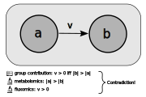
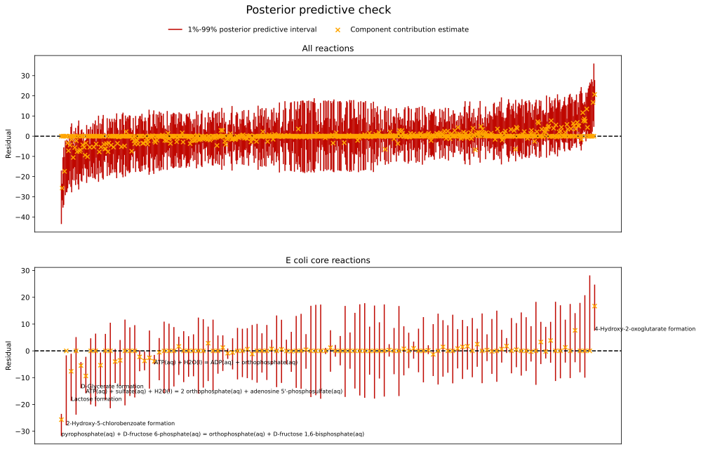
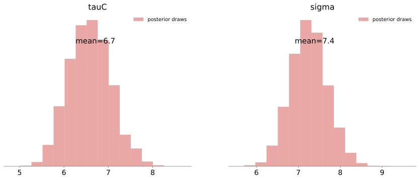
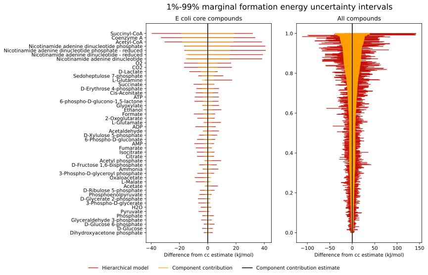
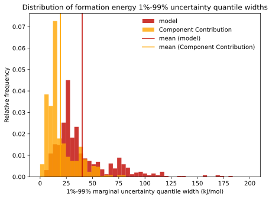
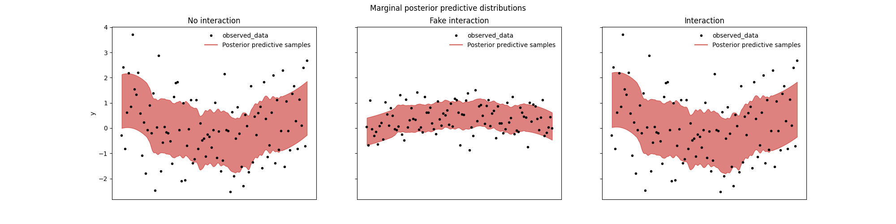
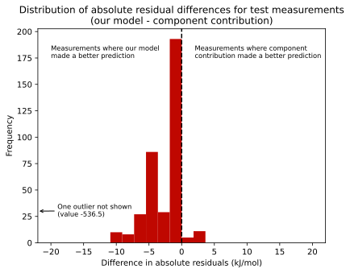
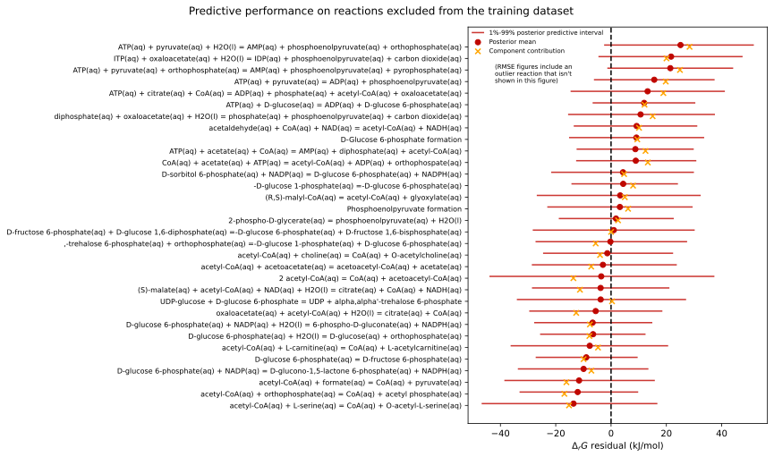

Hierarchical Bayesian regression modelling predicts biochemical rection energies and facilitates quantitative modelling of cell metabolism
Teddy Groves ![]()
The thermodynamic effect on a biochemical reaction depends principally on the standard-condition Gibbs energy changes of the compounds that the reaction consumes and produces. The state of the art method for estimating these parameters involves a statistical model called group contribution. We highlight a problem with the group contribution model that limits its usefulness in downstream modelling applications: the group contribution model typically produces a rank-deficient uncertainty covariance matrix. We present a new model that avoids this issue, generates more accurate estimates than the current state of the art and has unlimited reaction coverage. Our model includes parameters for both chemical groups and compounds, using a hierarchical component to balance information pertaining to these two levels, and addresses the issue of stoichiometric collinearity using QR decomposition. We provide a Gaussian approximation to our model’s posterior distribution that can be used for downstream modelling. Our results can be replicated straightforwardly by following the instructions at https://github.com/biosustain/dgfreg.
Abstract
Background
The thermodynamic effect on the rate of a biochemical reaction
The rate of an enzyme-catalysed reaction is closely related to the reaction’s thermodynamic properties, particularly the standard condition Gibbs free energy of formation, or “formation energy” of each consumed and produced compound. Under standard conditions the overall rate \(v\) of a reaction involving \(n\in\mathbb{N}\) species depends on formation energies \(\Delta_f G\in\mathbb{R}^n\), as well as stoichiometries \(\vec{s}\in\mathbb{R}^n\), concentrations \(c\in\mathbb{R}_+^n\), temperature \(T\in \mathbb{R}_+\), gas constant \(R\approx0.008314\) and non-thermodynamic effects \(\psi \in \mathbb{R}_+\) according to equation \(\eqref{eq-thermodynamic-effect}\):
\[\begin{align} v &= reversibility \cdot \psi \label{eq-thermodynamic-effect} \\ reversibility &= 1 - \exp(\Delta_rG + RT \cdot \frac{\vec{s}^\top\cdot\ln c}{RT}) \nonumber \\ \Delta_rG &= \vec{s}^\top\cdot \Delta_fG \nonumber \end{align}\]
From equation \(\eqref{eq-thermodynamic-effect}\) it can be seen that the thermodynamic term \(reversibility\) determines the direction of \(v\) as well as affecting its magnitude. Accurate quantitative modelling of biochemical fluxes therefore requires careful estimation of formation energies.
Standard condition \(\Delta_rG\) measurements
Since not all biochemically important compounds’ formation energies have been directly measured, in order to estimate formation energies it is necessary to rely on measurements of \(\Delta_rG\). Beber et al. (2021) describes the software package and website eQuilibrator, which provides access to a large database of such measurements derived from Goldberg, Tewari, and Bhat (2004) among other sources.
The reactant contribution model
Given a set of \(n\) measurements \(y\in\mathbb{R}^n\) of \(r\) reactions’ standard condition Gibbs energy changes and a stoichiometric matrix \(S\in\mathbb{R}^{m\times r}\) providing the stoichiometric coefficients of \(m\) compounds in each measured reaction, formation energies can be estimated using the generative model in equation \(\eqref{eq-reactant-contribution}\), which is known as the ‘reactant contribution’ model:
\[\begin{align} y_i &\sim N(\hat{y}_i, \sigma) \label{eq-reactant-contribution} \\ \hat{y}_i &= \Delta_rG_{reaction(i)} \nonumber \\ \Delta_rG &= S^\top\cdot \Delta_fG \end{align}\]
In equation \(\eqref{eq-reactant-contribution}\), \(reaction\) is a function mapping measurement indexes to columns of \(S\), so that \(reaction(i)\) is the index of the column of S that was measured by measurement \(i\) and \(\sigma\in\mathbb{R}\) is a number representing the accuracy of the measurements.
Noor et al. (2013) describes how the reactant contribution model has been used to provide accurate estimates of biochemical formation energies. Unfortunately, the formation energies of many biochemical compounds cannot be estimated using the reactant contribution model because they do not participate in any measured reactions.
Reformulation using sufficient statistics
By averaging measurements of the same reaction, we can create the mathematically equivalent form of the reactant contribution model shown in equation \(\eqref{eq-rc-sufficient}\). This model formulation takes advantage of the sufficient statistic that, for a sample of \(size\) IID normal random variables \(X \sim N(\mu, \sigma)\), the sample mean \(\bar{X}\) has distribution \(\bar{X}\sim N(\mu, \frac{\sigma}{\sqrt{size}})\). In equation \(\eqref{eq-rc-sufficient}\), \(\bar{y}_j\) is the mean measurement of reaction{j} and \(size\) is a function mapping reaction indexes to measurement counts, so that \(size(j)\) is the number of measurements of reaction \(j\).
\[\begin{equation} \bar{y}_j \sim N(\Delta_rG, \frac{\sigma}{size(j)}) \label{eq-rc-sufficient} \end{equation}\]
This formulation is generally computationally preferable because the number of normal distribution densities to evaluate is the number of reactions \(r\), which is usually less than the number of measurements \(n\).
The group contribution model
The group contribution model addresses the reactant contribution model’s lack of coverage by allowing some unmeasured compounds’ formation energies to be estimated, provided these compounds are composed of measured chemical groups. The group contribution model adds to the generative model in equation \(\eqref{eq-rc-sufficient}\) the group additivity assumption \(\eqref{eq-group-additivity}\), according to which a compound’s formation energy is the stoichiometry-weighted sum of the formation energies of its constituent groups, ‘group contribution’ model. In equation \(\eqref{eq-group-additivity}\), \(G\in\mathbb{R}^{m\times g}\) is a group incidence matrix that maps combinations of \(m\) compounds and \(g\) groups to stoichiometric coefficients and \(\Delta_gG\) is a vector of \(g\) group formation energies.
\[\begin{equation} \Delta_fG = G\cdot\Delta_gG \label{eq-group-additivity} \end{equation}\]
Using this model’s estimates \(\hat{\Delta_gG}\) for the parameters \(\Delta _gG\), the formation energy of an unmeasured compound composed of measured chemical groups can be estimated based on its group composition \(\vec{g}\) using equation \(\eqref{eq-group-contribution-prediction}\).
\[\begin{equation} \hat{\Delta_fG} = \vec{g}\cdot \hat{\Delta_gG}\label{eq-group-contribution-prediction} \end{equation}\]
The component contribution model
Noor et al. (2013) proposes to use formation energy estimates from the reactant contribution model where possible, falling back to estimates from the group contribution model for unmeasured compounds composed of measured groups. This method is known as the ‘component contribution’ model. While there have been more recent efforts to more accurately capture the effect of experimental conditions, as described in Du, Zielinski, and Palsson (2018) and Beber et al. (2021), the component contribution model remains the state of the art for estimating standard condition biochemical formation energies.
Theoretical problem with the group contribution model
Suppose two compounds \(a\) and \(b\) have the same group composition \(\vec{g}_{ab}\). Then the group contribution estimate for compound \(a\) is necessarily equal to the group contribution estimate for compound \(b\), i.e.
\[\begin{equation} \hat{\Delta_fG}_a=\vec{g}_{ab}\cdot\hat{\Delta_gG}=\hat{\Delta_fG}_b \label{eq-group-contribution-problem} \end{equation}\]
This implies that a reaction \(j\) with stoichiometry \(\vec{s}_j\) that converts \(a\) into \(b\) or vice versa will always have estimated standard condition Gibbs energy change \(\hat{\Delta_rG}_j\) zero according to the group contribution model. According to equation \(\eqref{eq-thermodynamic-effect}\), the group contribution model will therefore imply that the direction of reaction \(j\) depends only on the sign of the term \(1 - \exp(RT \cdot \frac{\vec{s}_j^\top\cdot\ln c}{RT})\), so that \(v > 0\) if and only if \(|a| < |b|\).
Figure 1 illustrates how this feature of the group contribution model can lead to contradictions with quantitative metabolomics and fluxomics data.

This feature of the group contribution model leads to a more practical modelling problem. If \(\Delta_gG\) is estimated by maximum likelihood estimation, the covariance matrix of the estimator vector \(\hat{\Delta_fG}=G\hat{\Delta_gG}\) is given by equation \(\eqref{eq-group-contribution-rank}\):
\[\begin{equation} Cov(\hat{\Delta_fG}) = G \cdot Var(\hat{\Delta_gG}) \cdot G^\top \label{eq-group-contribution-rank} \end{equation}\]
This covariance matrix has the same rank as \(G\) since for \(A=B\cdot C\), \(rank(A)=min(rank(B), rank(C))\). Therefore, in the typical case where the number of groups \(g\) is less than the number of compounds \(m\), the covariance matrix \(Cov(\hat{\Delta_fG})\) is guaranteed to be rank-deficient. If \(Cov(\hat{\Delta_fG})\) is used as the covariance matrix of a multivariate normal prior distribution in a Bayesian mechanistic metabolic model, the resulting posterior distribution will assign zero probability mass to some regions of \(\Delta_fG\) space. If the true parameter allocation lies in such a region, the model will be irreparably biased and will also likely suffer from computational issues due to an unresolvable conflict between prior and likelihood.
Methods
We began by assessing to what extent the issue we identified with the group contribution method affects the state-of-the-art formation energy estimates provided by eQuilibrator. Our method for this assessment is described in Section 4.1.
Next, as described in Section 4.2, we devised a minimal improvement to the group contribution method that avoids the rank deficiency issue with the minimum possible change.
Section Section 4.3 describes an alternative statistical model of the eQuilibrator data that addresses the rank deficiency issue more comprehensively.
Finally, Section 4.6 describes how we compared our new models with the state of the art.
How big is the problem?
Since there are multiple possible decompositions of compounds into chemical groups, it is not possible to say in general which reactions are affected by the issue we highlight with the group contribution model. However to get a general idea we used the group decomposition matrix from the equilibrator-api package . We then used the e_coli_core model from Orth, Fleming, and Palsson (2010), as exposed by the Python package COBRApy Ebrahim et al. (2013), to identify important reactions that conserve groups according to this matrix.
We found 82 group-conserving reaction in the training dataset, 11 of which are also in the e_coli_core model. These reactions are shown below in Table 1.
See appendix [SAY WHERE] for code used to carry out this analysis.
| description | EC number |
|---|---|
| alpha-D-Glucose 6-phosphate(aq) = beta-D-Glucose 6-phosphate(aq) | 2.7.4.3 |
| 3-phosphonooxypyruvate(aq) + L-glutamate(aq) = 2-oxoglutarate(aq) + O-phospho-L-serine(aq) | 2.7.1.40 |
| UDPglucose(aq) = UDPgalactose(aq) | 1.6.1.1 |
| 2’-deoxyinosine(aq) + adenine(aq) = 2’-deoxyadenosine(aq) + hypoxanthine(aq) | 5.3.1.9 |
| 3-phosphonooxypyruvate(aq) + L-glutamate(aq) = 2-oxoglutarate(aq) + O-phospho-L-serine(aq) | 5.3.1.6 |
| UDPglucose(aq) = UDPgalactose(aq) | 4.2.1.2 |
| N-succinyl-2-L-amino-6-oxoheptanedioate(aq) + L-glutamate(aq) = N-succinyl-L-2,6-diaminoheptanedioate(aq) + 2-oxoglutarate(aq) | 1.1.1.42 |
| 3-phosphonooxypyruvate(aq) + L-glutamate(aq) = 2-oxoglutarate(aq) + O-phospho-L-serine(aq) | 4.1.3.1 |
| L-aspartate(aq) + 2-oxoglutarate(aq) = oxaloacetate(aq) + L-glutamate(aq) | 4.2.1.3 |
| L-alanine(aq) + hydroxypyruvate(aq) = L-serine(aq) + pyruvate(aq) | 4.1.2.13 |
| ATP(aq) + GDP(aq) = ADP(aq) + GTP(aq) | 4.2.1.11 |
Improved group contribution model
As a smallest possible adjustment to the group contribution model, we propose to add a vector of independent random variables \(\vec{\eta}\in\mathbb{R}^m\) to the group contribution estimate in order to quantify the error due to compound formation energies differing from sums of group formation energies. The improved generative model is shown below in equation \(\eqref{eq-group-contribution-improved}\).
\[\begin{align} \bar{y}_j &\sim N(\Delta_rG_j, \frac{\sigma}{size(j)}) \label{eq-group-contribution-improved} \\ \Delta_rG &= S^\top\cdot \Delta_fG \nonumber \\ \Delta_fG &= G\cdot\Delta_gG + \vec{\eta} \nonumber \end{align}\]
For a minimal change to the group contribution model we propose assuming \(\vec{\eta}_i \sim N(0, \tau)\) for all compounds \(i\), where \(\tau\in\mathbb{R}^+\) is a known real number.
This improved group contribution model leads has the same maximum likelhood estimator \(\hat{\Delta_fG}\) as the current group contribution method. However in the improved model the covariance matrix \(Cov(\hat{\Delta_fG})\) is found by equation \(\eqref{eq-improved-cov}\).
\[\begin{align} Cov(\hat{\Delta_fG}) &= G \cdot Var(\hat{\Delta_gG}) \cdot G^\top \label{eq-improved-cov} \\ &+ diag_m(\tau) \nonumber \end{align}\]
In this model \(Cov(\hat{\Delta_fG})\) is guaranteed to be full rank, as \(diag_m(\tau)\) is full rank. The model, and prior distributions based on it, will therefore avoid the computational and theoretical issues and discussed in Section 3.
For the best possible results we suggest choosing \(\tau\) based on the available information about the likely general accuracy of the group additivity assumption. In practice the choice of \(\tau\) is not very important when the main goal is simply to obtain a full-rank covariance matrix for formation energy estimates, as any positive value will achieve this. On the other hand, if the main goal requires an accurate value for \(\tau\) we recommend using estimates derived from the more detailed statistical model described below in Section 4.3.
Hierarchical component contribution model
As an alternative to the component contribution model, we propose a hierarchical model which includes both compound-level and group-level effects. This model is realised by augmenting the generative model in equation \(\eqref{eq-group-contribution-improved}\) with the prior distributions in equation \(\eqref{eq-component-contribution-improved}\):
\[\begin{align} \vec{\eta} &\sim N(0, \tau) \label{eq-component-contribution-improved} \\ \Delta_gG &\sim N(0, 5000) \nonumber \\ \tau &\sim HN(0, 3) \nonumber \\ \sigma &\sim HN(0, 3) \nonumber \\ \end{align}\]
In equation \(\eqref{eq-component-contribution-improved}\) \(HN\) represents the non-negative half-normal distribution, i.e. the distribution with normal distribution densities for non-negative numbers and zero density for negative numbers.
The prior distribution for the group formation energy vector \(\Delta_gG\) is uninformative, whereas those for \(\tau\), \(\sigma\) and \(\eta\) are informative. In particular, the prior distribution for \(\eta\) is hierarchical as it involves the random variable \(\tau\). This allows us to estimate the general accuracy of the group additivity assumption from the data: larger values of \(\tau\) will allow weaker coupling between compound and group formation energies.
This model structure is appropriate given the available information. In general there is very little prior information available about group formation energies, but there is information about measurement accuracy and the likely accuracy of the group additivity assumption.
QR reparameterisation
Since our model’s joint posterior distribution cannot be calculated analytically and has many parameters, we decided to use Markov Chain Monte Carlo to perform posterior inference. This proved difficult under a naive parameterisation due to the collinearity induced by multiplying the parameter vector \(\Delta_gG\) by the group decomposition matrix and then the stoichiometric matrix as shown in equation \(\eqref{eq-group-contribution-improved}\). Due to these transformations, the information in the measurements relates to the underlying group formation energy parameters through linear projections determined by the matrix \(S^\top G\). This structure induces a problematic posterior geometry that is difficult for a gradient-based MCMC sampler to traverse.
In order to address this issue we reparameterised our models using the thin QR decomposition. Specifically, we found matrices an orthonormal matrix \(Q\in\mathbb{R}^{r\times g}\) and an upper triangular matrix \(R\in\mathbb{R}^{g\times g}\) such that \(Q\cdot R = S^\top\cdot G\). We could then express our model in terms of auxiliary parameters \(\vec{q}\) as shown in \(\eqref{eq-qr}\).
\[\begin{align} Q^\star &= Q \cdot \sqrt{r - 1} \label{eq-qr} \\ R^\star &= \frac{R}{\sqrt{r - 1}} \nonumber \\ \Delta_rG &= Q^\star \cdot \vec{q} + S^\top \cdot \vec{\eta} \nonumber \end{align}\]
In this parameterisation the formation energy parameters \(\Delta_fG\) and \(\Delta_gG\) can be recovered as shown in equation \(\eqref{eq-qr-recovery}\), in which the superscript \(^+\) represents the Moore-Penrose pseudo-inverse:
\[\begin{align} \Delta_gG &= (R^\star)^+ \cdot \vec{q} \label{eq-qr-recovery}\\ \Delta_fG &= G \cdot \Delta_gG + \eta \nonumber \end{align}\]
This reparameterisation closely follows the advice on the relevant page of the Stan user’s guide, which can be found here in the exact form in which it was accessed.
Estimating formation energies for unmeasured or unmodelled compounds
Using our approach it is possible to estimate the formation energy of any compound, regardless of whether the compound was measured or explicitly included in our model. The procedure for doing this is as follows.
- If the compound was included in the model, generate estimates using the marginal posterior samples for that compound as described above in equation \(\eqref{eq-qr-recovery}\).
- If the compound was not included in the model, but is composed of included groups, then generate draws for the variable \(\eta_{new}\in\mathbb{R}\) based on the marginal posterior samples for \(\tau\), using the assumption \(\eta_{new}\sim N(0, \tau)\). Now recover \(\Delta_fG_{new}\) as in \(\eqref{eq-qr-recovery}\).
- If the compound was not included in the model and is partly or wholly composed of \(g_{new}\) un-modelled groups, generate draws for the missing group parameters \(\vec{q}_{new}\in\mathbb{R}^{g_{new}}\) based on the prior distribution for \(\vec{q}\). Next find \(\Delta_gG_{new}\) using equation \(\eqref{eq-qr-recovery}\), then generate \(\eta_{new}\) and recover \(\Delta_fG_{new}\) using the same method as for case 2.
While it is possible, using this procedure, to generate formation energy estimates for any compounds consistently with the information and assumptions in our model, the accuracy of the resulting estimates is limited by the information about the unmeasured or unmodelled compounds in the training data. In particular, formation energy estimates for compounds that include unmeasured chemical groups will typically be very wide, as our model assumes that there is little information available about the parameters \(\vec{q}_{new}\).
Using our results for downstream modelling
In order to use our model results for downstream modelling, for example as a prior distribution for thermodynamic parameters in a Bayesian kinetic model, we suggest fitting a multivariate normal distribution to our model’s posterior \(\Delta_fG\) parameter samples. We have done this for our results and provide the resulting tables in [TODO: SAY WHERE]. The code that produced these tables is available at [TODO: SAY WHERE].
Model evaluation
In order to compare our new model with the state of the art, we fit it to the component contribution dataset. We compared our model’s estimates with those of the component contribution model when fit to the same dataset. Next, we constructed a test dataset by removing some reactions, then re-fit both our model and the component contribution model to this dataset and compared the resulting estimates.
Specifically, we excluded from the test dataset all measurements of reactions involving the compounds Acetyl CoA, PEP and G6P. There were 33 such reactions and 370 measurements.
Software
We implemented our project using Python and structured it using the package bibat [TODO: INSERT CITATION].
We used the package equilibrator_api to fetch the component contribution dataset and cobrapy to identify metabolites and reactions in the e_coli_core model. We carried out data cleaning, structuring and validation using pydantic, pandera, numpy and pandas.
Our statistical models were written in the probabilistic programming language Stan Carpenter et al. (2017). Sampling was performed using cmdstan via the cmdstanpy interface. We used arviz to diagnose, structure and store our samples and for visualisation.
All the code used to implement our analysis, and instructions for reproducing it, can be found at https://github.com/biosustain/dgfreg.
Results
MCMC diagnostics
For each of our models, we assessed convergence by running 4 MCMC chains and monitoring the improved \(\hat{R}\) statistic proposed in Vehtari et al. (2021), verifying that this number was close to 1 for all variables. We also measured the effective sample size per iteration, verifying that this was not low enough to indicate improper sampling. We also checked that there were no post-warmup divergent transitions.
Assessment of model specification
To assess model specification we performed a posterior predictive check as shown in figure Figure 2. Our model’s 1%-99% marginal posterior predictive distributions contained the measured value for approximately 98% of measurements, with no particular patterns in the deviations, indicating a reasonably good. Figure Figure 3 shows that our model was able to achieve a good fit despite a somewhat unbalanced distribution of measurements.


Posterior distributions of interesting parameters
Figure 4 shows the posterior distributions in our model for the parameters \(\mu\), \(\tau_{compound}\) and \(\tau_{group}\), alongside these parameters’ prior distributions. The plots show that the model was able to reconcile the data with our prior information, though it made \(\tau_{group}\) somewhat higher than we expected.

Comparison with component contribution
Overall our model produced similar formation energy estimates with somewhat larger marginal uncertainties compared with the component contribution model. This can be seen from figure Figure 5, which shows the marginal 1%-99% posterior intervals for our model alongside the 1%-99% quantiles of the corresponding component contribution uncertainty intervals. Note that these plots are normalised based on the central component contribution estimate. The fact that the red horizontal lines center on the black vertical line indicates that our model’s central estimates tend to be very close to those of the component contribution model.

Figure 6 shows histograms of the 1%-99% marginal posterior widths for our model and the component contribution model. It shows more explicitly than Figure 5 that the new model tends to produce more uncertain marginal formation energy estimates than the component contribution model.

To compare model fit between our model and the component contribution model we found, for each measurement in the full dataset, the residual for the component contribution \(\Delta_rG\) as well as the residual for our model’s marginal posterior predictive mean. A histogram of the results is shown in Figure 7, as well as the overall root mean squared error for each model. These results show that the two models achieved about the same level of fit to the data, with our model achieving slightly smaller errors on average.

Out of sample predictions
The RMSE on test measurements for component contribution was 43.28 for component contribution compared with 16.70 for our model. However, this figure is somewhat misleading as it is dominated by a single outlier measurement of the phosphoenolpyruvate mutase reaction. There is little information about this reaction in the test dataset, whose marginal posterior predictive interval in our model spans a range of about 4500 kJ/mol. The component contribution model predicts a value of 771 kJ/mol, whereas our model’s posterior predictive mean was 235 kJ/mol and the measured value was -28 kJ/mol. Excluding this measurement the RMSE values are 12.01 for component contribution and 9.57 for our model.
Close inspection of the residuals reveals that this difference relects a consistent improvement in our model’s predictions compared with component contribution. Figure 8 shows the distribution of residual differences for test measurements between the two models. For most test measurements our model made better predictions.

Figure 9 shows, for each reaction except phosphoenolpyruvate mutase, our model’s 1%-99% residual interval with respect to the observed average measurement for that reaction alongside the posterior predictive mean residual and component contribution residual. This shows the typical size of the difference in out of sample prediction accuracy between the two models. It is clear from this plot that our model’s posterior predictive means tended to make better out of sample predictions than component contribution.

Discussion
Comparison with state of the art
While our results show that our model improves on the state of the art in out-of-sample predictive accuracy, the most important improvement is to produce a plausible multivariate normal distribution with a full-rank covariance matrix for biochemical formation energies. We expect that this will allow for better prior distributions in future Bayesian thermokinetic models.
Limitations
Our model does not take into account adjustments for experimental conditions, instead naiively modelling condition-adjusted measurements reported by eQuilibrator. This is important as the adjustment for conditions is non-trivial and different plausible modelling assumptions can lead to large changes in adjusted measurements. See [CITATION HERE] for more discussion of this issue.
We also used the same group decomposition matrix as eQuilibrator. An alternative group decomposition matrix might yield more accurate results. [CITE example paper]
Another modelling approach that we did not explore attempts to infer formation energies from chemical structures. [CITATION].
Extensions and future work
We plan to augment our model with an application that can generate posterior summaries for unmodelled compounds as described in section Section 4.4.